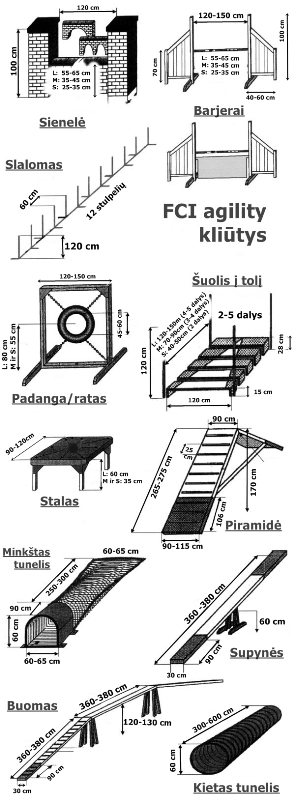
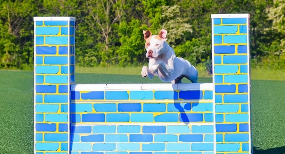
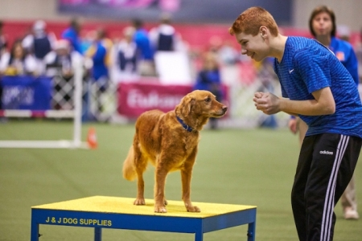
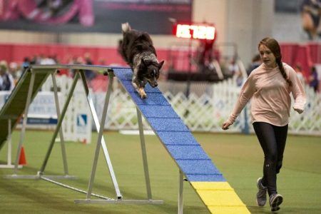
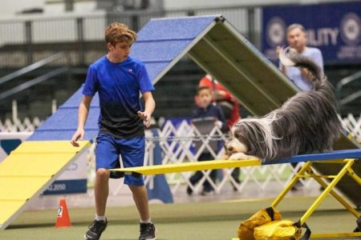
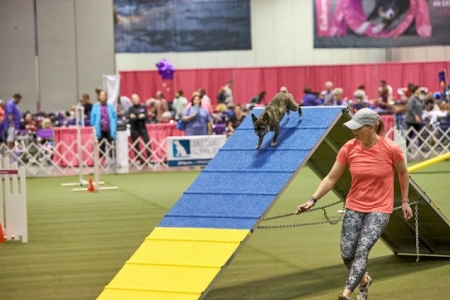
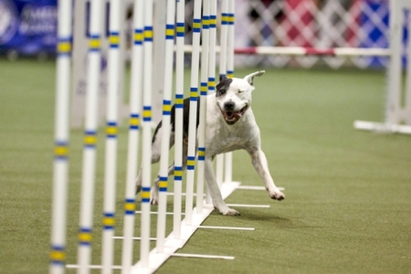
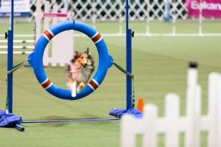
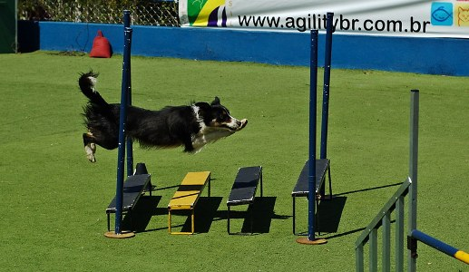

Agility rungtys
Varžybose dalyvaujantys šunys varžosi trijose ūgio kategorijose:- S (Small) - mažų šunų, kurių ūgis ties ketera mažiau nei 35 cm.
- M (Medium) - vidutinių šunų, kurių ūgis ties ketera 35 cm. ir daugiau, bet mažiau nei 43 cm
- L (Large) - didelių šunų, kurių ūgis ties ketera 43 cm ir daugiau.
Tose pačiose varžybose šuo gali dalyvauti tik vienoje ūgio kategorijoje. Ūgio kategorija, kurioje šuo varžosi, pažymima dalyvių sąraše, tai pat nurodoma Agility darbo knygelėje. Esant abejonių dėl šuns ūgio, „S“ bei „M“ ūgio kategorijoje besivaržantys šunys gali būti matuojami varžybų teisėjo. Varžybose negali būti matuojami „S“ bei „M“ ūgio kategorijoje besivaržantys šunys, kurių darbo knygelėje yra bent 3 FCI tarptautinio agility teisėjo sertifikatus turinčių teisėjų įrašai, patvirtinantys ūgio kategoriją, kurioje šuo startuoja.
Rungtys (trasos) skirstomos į tris lygius:- Agility/Jumping 1 (A1, J1) – gali varžytis visi šunys, kuriems renginio dieną suėjo ne mažiau kaip 18 mėn.
- Agility/Jumping 2 (A2, J2) – gali varžytis tik tie šunys, kurie yra ne mažiau kaip 3 kartus įveikę Agility1 (A1) trasą su įvertinimu puikiai ir be baudos taškų, teisėjaujant bent 2 skirtingiems teisėjams.
- Agility/Jumping 3 – gali varžytis tik tie šunys, kurie yra ne mažiau kaip 3 kartus įveikę Agility2 (A2) trasą su įvertinimu puikiai ir be baudos taškų, teisėjaujant bent 2 skirtingiems teisėjams.
Pradedančiųjų (A0) – gali dalyvauti A1-A3 dar nestartavę šunys, kurių amžius 12 ir daugiau mėn. Pradedančiųjų (A0) lygio rungtis (trasa) sudaroma tik iš barjerų ir kietų tunelių. Nustatomas barjerų aukštis viena pakopa mažesnis, nei priklauso tai kategorijai pagal FCI taisykles (pvz.: jei šuo priklauso „L“ ūgio kategorijai, jis įveiks barjerus, kurių aukštis toks, koks nustatomas „M“ ūgio kategorijos šunims ir t.t.). Maksimalus kliūčių rungtyje (trasoje) skaičius – 15.
Šuniukų (puppy) – gali dalyvauti A1-A3 bei A0 dar nestartavę šunys, kurių amžius 8 ir daugiau mėn. Šuniukų lygio rungtis (trasa) sudaroma tik iš kietų maišų.
Organizatorių nuožiūra varžybų metų gali būti numatomos:- Atviros (Open) tipo rungtys (trasos), kuriose gali dalyvauti A1-A3 lygių šunys varžybų dalyviai.
- Veteranų (Senior) rungtis – kurioje dalyvauja vyresni nei 8 metų šunys ir nestartavę tų varžybų kitų lygių rungtyse. Veteranų (Senior) rungtyje taip pat gali būti leidžiama startuoti: Jaunesniems nei 8 metų šunims, jei jie dėl sveikatos, fiziologijos ar kitų ypatybių nedalyvauja kitose rungtyse, tačiau jau yra dalyvavę varžybų A1 ar aukštesnio lygio rungtyse (trasose) ankstesnėse varžybose. Tokiu atveju šunims, jaunesniems nei 8 metai, startavusiems veteranų (Senior) rungtyje nors vienose varžybose, vėliau startuoti kitų lygių rungtyse (trasose) neleidžiama. Jaunesniems nei 8 metų šunims (jei jie nestartuoja tų varžybų kitų lygių rungtyse), jei jie startuoja su nepatyrusiu vedliu – t.y. vedliu, kuris per paskutinius 5 metus nėra startavęs su jokiu šuniu nei vienose varžybose nei vienoje A1-A3 lygio rungtyje. Tokiu atveju šunims, su neaptyrusiu vedliu, startavusiems veteranų rungtyje, kitose varžybose yra leidžiama startuoti lygio, kurį jis jau yra pasiekęs, rungtyse.

Barjerai
Jie skiriasi priklausomai nuo kurso, bet šuo turi peršokti strypą jo nepajudėdamas. Šuns ūgis lemia kiekvieno šuolio aukščius.
- Paprastas. Kliūtys gali būti sudarytos iš medinių ar sintetinių medžiagų kartelių (metalinės neleistinos). Šuniui neturi būti įmanoma pralįsti pro jokią kliūties sparno dalį. Sparno vidinis stovas turi būti bent 100 cm aukščio. Barjero sparnai negali būti sujungti ar pritvirtinti vienas prie kito
- Dvigubas. Du paprasti barjerai (kaip a) atveju). Aukščiausia kartelė yra kliūties gale. Bendras kliūties ilgis neturi viršyti: L: 55 cm; M: 40 cm; S: 30 cm. Aukščiausia kartelė yra kliūties gale.
Sienelė
Jie skiriasi priklausomai nuo kurso, bet šuo turi peršokti sienelę. Šuns ūgis lemia kiekvieno šuolio aukščius.
Bokštai yra kliūties dalis, turi būti bent 1 m aukščio, bet negali būti sujungti su ar pritvirtinti prie vidurinės panelės.
Stalas
Pauzės stalas – naudojama sulėtinti komandos judėjimą pirmyn, šuo turi sustoti ant stalo penkias sekundes iš eilės.
Turi būti stabilus ir neslidžiu paviršiumi, jo kampai neturi kelti pavojaus šuniui. Stalo pagrindo konstrukcija turi neleisti šuniui palįsti po apačia. Stalo šonai turi būti nudažyti spalva kontrastinga viršui.
Buomas
Šuo turi užbėgti rampa iš vienos pusės, lėkti per viršutinę horizontalią lentą, tada nusileisti rampa iš kitos pusės, būtinai paliesdamas „kontaktinę zoną“ (dažniausiai nudažytą ryškiai geltona spalva) lentos apačioje, kai jie išeina.
Kiekviena rampa turi turėti saugančias nuo slydimo ir užtikrinančias lengvesnį lipimą skersines juosteles, išdėstytas viena nuo kitos maždaug kas 25 cm, bet ne arčiau kaip 10 cm nuo kontaktinės (kitos spalvos) zonos pradžios. Šios skersinės juostelės turi būti 20 mm pločio ir 5 -10mm aukščio bei neturi turėti aštrių briaunų. Kiekvienos rampos apatinė 90 cm ilgio dalis (taip pat ir jos šonai) turi būti nudažyta kitokia spalva ir žymi kontaktinę zoną. Šuo, įveikdamas kliūtį, kontaktinę zoną turi paliesti nors viena koja. Buomo stovai negali išsikišti virš kliūties viršutinio paviršiaus.
Supynės
Skirtingai nei sūpynės, su kuriomis žaisdavote vaikystėje, šunys neranda partnerio dėl šios kliūties. Nubėgęs lenta aukštyn ir žemyn kita puse, kai ji sukasi su savo impulsu, šuo turi paliesti „kontaktinę zoną“ bent vienu kojų nagu, leisdamasis žemyn.
Centrinės atramos aukštis turi būti 60 cm, matuojant nuo žemės iki plokštės paviršiaus. Kontaktinės zonos tokios pačios, kaip ir buomui. Nuo slydimo saugančios skersinės juostelės neleistinos. Supynės turi persisverti per 2-3 sekundes, uždėjus 1 kg svorį per nulipimo zonos vidurį.
Piramidė
Piramidė - sudaryta iš dviejų plačių rampų, sujungtų vyriais, šuo turi greitai perlipti konstrukciją, perlipti viršūnę ir, leisdamasis, paliesti „kontaktinę zoną“.
Kiekviena rampa turi turėti saugančias nuo slydimo ir užtikrinančias lengvesnį lipimą skersines juosteles, išdėstytas viena nuo kitos maždaug kas 25cm, bet jokiu būdu ne arčiau kaip 10cm nuo kontaktinės zonos pradžios. Šios skersinės juostelės turi būti 20 mm pločio ir 5-10 mm aukščio bei neturi turėti aštrių briaunų.
Slalomas
Slalomas – sudarytas iš šešių iki 12 vertikalių stulpų, šuo turi įeiti į dešinę nuo pirmojo ir greitai perrišti kiekvieną iš kitų, nepraleisdamas nė vieno stulpo. Tai laikoma viena sudėtingiausių kliūčių įvaldyti
Stulpeliai turi būti kieti, 3-5 cm skersmens. Stulpeliai gali būti mediniai arba iš dirbtinių medžiagų (metaliniai neleistini).
Tuneliai
Tikslas paprastas: šuo turi įeiti iš vienos pusės ir išeiti per kitą. Nors tunelis dažnai būna ne tik tiesus, bet ir išlenktas, todėl šuo nemato išėjimo iš įėjimo, atsižvelgiant į tai, kaip tai paprasta, atviras tunelis dažnai laikomas puikia vieta pradėti treniruotę.
- Kietas tunelis - lankstus, kad būtų galima suformuoti vieną ar daugiau posūkių.
- Minkštas tunelis - Turi turėti kietą 90 cm ilgio įėjimą. Išėjimas daromas iš laisvo audinio, turi būti įtvirtintas, kad nejudėtų. Jei įmanoma, išėjimas turi būti prismeigiamas prie žemės, smeigtukai ne toliau kaip 50 cm vienas nuo kito, kad visų dydžių šunys galėtų laisvai išlįsti.
Padanga/ratas
Padangos šuolis – šuo turi greitai ir švariai peršokti per padangos angą. Šuolio aukštis priklauso nuo šuns ūgio.
Aukštis matuojamas nuo žemės iki padangos angos centro. Padangos plotis 8 – 18 cm. Padangos aukštis turi būti keičiamas (virve ar grandine), įtvirtinimas arba kietos jungtys neleidžiami. Atstumas tarp padangos ir rėmo turi būti bent 15 cm.
Šuolis į tolį
Šuo turi peršokti šokdamas į tolį išdėstytas auktėjimo tvarka dalis.
Dalys išdėstomos aukštėjimo tvarka. Žemiausia dalis priekyje, jos aukštis 15 cm. Aukščiausios dalis – 28cm. Kampuose išdėstomos keturios 120 cm aukščio, kartelės (nepritvirtintos nei prie vienos šuolio dalies).
